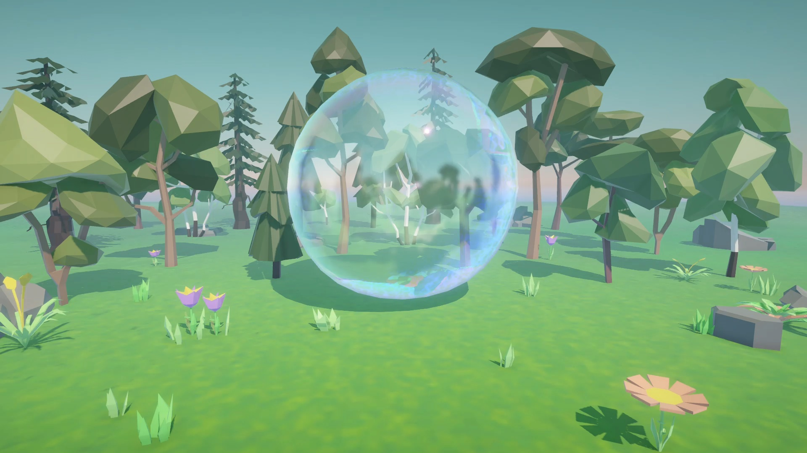

Forest Bubble
An animation project created in Unity, depicting a serene forest scene turning into a fire scene when the bubble pops.



Type: Game Design / Interactive Media
Time: 2025
Process & Concept
This project explores the intersection between nature and digital play. It uses Unity’s particle and animation system to create a forest environment that suddenly transforms when the bubble bursts—revealing a hidden, fiery layer underneath. The contrast symbolizes fragility within natural systems.